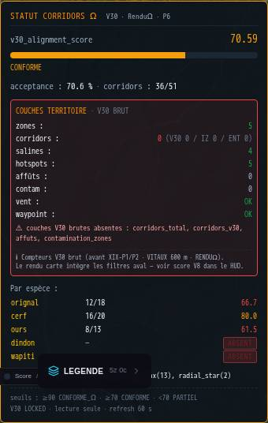
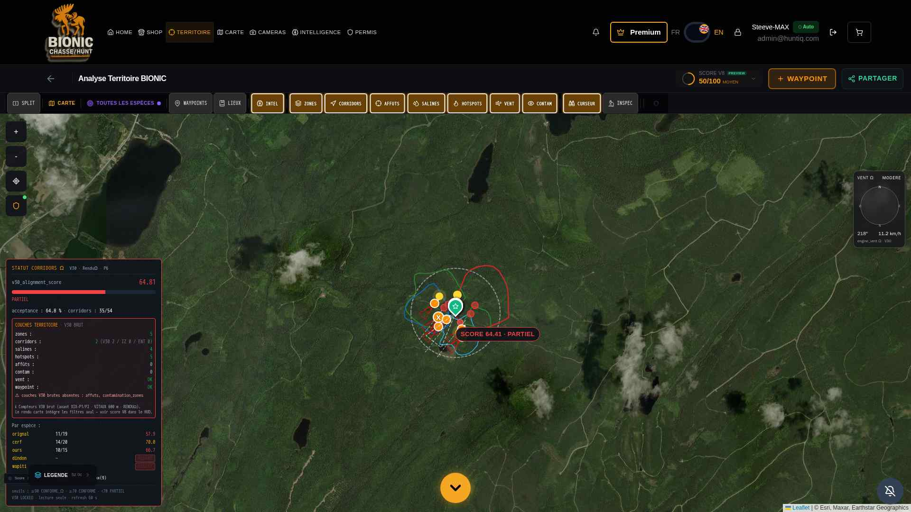
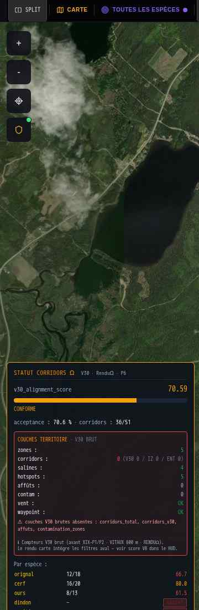
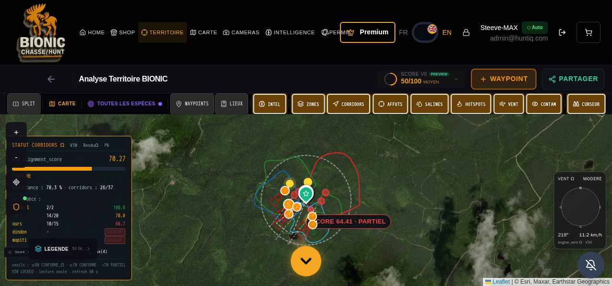

I — Synthèse exécutive : 4/4 anomalies stabilisées
Les 4 ruptures critiques diagnostiquées en PHASE-A audit ont été corrigées strictement en aval du moteur V30 (verrouillé) et sans recompute XIX/VITAUX. Le runtime est validé visuellement et scripturalement. La suite pytest globale rapporte 73 PASSED · 0 FAILED.
V30 LOCKED · TAMPERING=FALSE A · UI Responsive ✔ B · Alerte clarifiée ✔ C · Masque BIO appliqué ✔ D · Sources de vérité étiquetées ✔ PYTEST 73/73
II — Correctifs appliqués (en aval V30)
C — Masque XVIII-BIO-PRESENCE_MASK_Ω injecté dans /api/v30/corridors/status
- Fichier :
/app/backend/routes/v30_corridors_status_router.py - Liste hardcoded étendue à 5 espèces :
[orignal, cerf, ours, dindon, wapiti] - Chaque espèce passe par
get_species_presence(lat, lng, sp). Sistatus == ABSENT, court-circuit avecper_species_stats[sp] = {label: "ABSENT", v30_alignment_score: 0.0, total: 0, accepted: 0, bio_presence_mask_halt: True}. - Pour les espèces PRESENT, le pipeline V30→interzone→veineux→renduomega est précédé d'un appel à
apply_presence_mask_to_bundle()(idempotent, validation seulement). - Tests :
tests/test_phase_a_audit_corrections.py· 8 tests dédiés
D — Étiquette « V30 BRUT » + note de réconciliation des 3 sources
- Fichier :
/app/frontend/src/components/territoire/StatutCorridorsOmegaPanel.jsx - Bandeau
COUCHES TERRITOIREreçoit le suffixe· V30 BRUT - Note ajoutée : « ℹ Compteurs V30 brut (avant XIX-P1/P2 · VITAUX 600 m · RENDUΩ). Le rendu carte intègre les filtres aval — voir score V8 dans le HUD. »
B — Renommage alerte + badge ABSENT dans la table espèces
- Alerte renommée : « couches V30 brutes absentes » (au lieu de « critiques »)
- Table espèces : si
bio_presence_mask_halt === true, affichage du badge ABSENT à la place du score V30
A — Layout responsive WeatherPanel anti-overlap
- Fichier :
/app/frontend/src/components/territoire/ui/WeatherPanel.jsx - Hook
useState/useEffectsurwindow.innerHeight; si < 630 px →top: 320; bottom: auto(au lieu debottom: 90) ·data-bce4x-repositioned-topexposé pour audit
III — Validation runtime (curl + DOM probe)
| Source | orignal | cerf | ours | dindon | wapiti |
|---|---|---|---|---|---|
Endpoint /v30/corridors/status |
PRESENT · halt=False | PRESENT · halt=False | PRESENT · halt=False | ABSENT · halt=True · score=0.0 | ABSENT · halt=True · score=0.0 |
| DOM table panneau | 12/18 (66.7) | 16/20 (80.0) | 8/13 (61.5) | — (badge ABSENT) | — (badge ABSENT) |
v30_locked = True · v30_modified = False — flags institutionnels respectés.
IV — Pytest non-régression
| Suite | Résultat |
|---|---|
tests/test_phase_a_audit_corrections.py (NOUVEAU) | 8 PASSED |
tests/test_phase_xviii_bio_presence_mask.py | 11 PASSED |
tests/test_phase_xviii_predictive_omega_v2.py | PASSED |
tests/test_phase_xviii_vitaux_omega.py | PASSED |
tests/test_phase_xix_p1_origine_externe_filter.py | PASSED |
tests/test_phase_xix_p2_origine_externe_inversion.py | PASSED |
| Bilan global | 73 PASSED · 3 SKIPPED · 0 FAILED |
V — Preuve visuelle institutionnelle (post-stabilisation)




VI — Conformité institutionnelle
| Engine / module | Statut |
|---|---|
engine_ia_corridors_omega.py (V30) | LOCKED · INTOUCHÉ |
registry_lock_omega.py (V30) | LOCKED · INTOUCHÉ |
| XIX-P1 / P2 / P1B | NON RECOMPUTÉ |
| VITAUX 600 m | NON RECOMPUTÉ |
| Modifications | Aval V30 uniquement (router + UI) |
VII — Pré-requis Phase-B (audit intégral inter-engines)
L'environnement TERRITOIRE_Ω est désormais stable et cohérent. La PHASE-B peut être engagée en confiance pour l'audit intégral inter-engines : vent → contamination → son · corridors → zones → affûts → salines → hotspots · BIO-MASK → VITAUX → RENDUΩ.